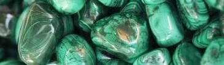

MALAQUITA: poderes y usos
La malaquita es una mena secundaria de cobre que se presenta en forma de masas botroidales o incrustadas, normalmente en una estructura fibrosa, aunque también puede presentarse en agregados reniculares y estalactitas con bandas concéntricas, y más raramente, en cristales individuales prismáticos. La principal característica de la malaquita son las bandas de varios tonos verdes, que pueden apreciarse a través del corte o pulido, con lo que es un mineral que suele cortarse en forma de cabujón para la elaboración de joyería.

Derivada de su nombre en latín “malachites”, que significa “a través”, y del griego
antiguo “malakhê”, que significa “malva”, la piedra malaquita heredó este nombre
por su gran parecido verde con las hojas de la malva.Personalidades destacadas de
Egipto, no sólo faraones, la preferían por su magnífico poder. Los gobernantes
cubrían el interior de sus tocados y ropas con malaquitas porque creían que los
ayudaría a gobernar mejor. También la utilizaban para protegerse durante el embarazo,
las mujeres egipcias solían llevar una piedra malaquita alrededor del cuello. De hecho,
la malaquita se asociaba a Thueris, la diosa del hipopótamo y protectora de la maternidad.
Entre los griegos, la piedra malaquita se utilizaba como protección contra las
lesiones. Los soldados lo llevaban como amuleto en el cuello o en la muñeca.
En Éfeso, las piedras de malaquita estaban incrustadas en los objetos decorativos
y los ornamentos del templo de Artemisa.
En la Edad Media, la malaquita se utilizaba como escudo contra el mal de ojo y
todas las energías dañinas. En particular, se abogaba por proteger a los niños
de enfermedades mortales. Según sus creencias, los romanos creían que la piedra
malaquita protegía contra los rayos. Por ejemplo, los romanos recomendaban
encarecidamente que los niños tuvieran un talismán o colgante de malaquita para
protegerse.
Poderes de la malaquita
Este mineral que ha de ser tratado con precaución debido a su enorme poder, ya que amplifica tanto las energías positivas como las negativas. Es una importante piedra protectora ya que absorbe de una forma muy fácil las energías negativas del cuerpo. La malaquita limpia y activa los chakras.
Psicológicamente es una piedra de transformación, muestra todo aquello que impide tu
crecimiento espiritual, rompe vínculos no deseados y enseña a asumir responsabilidades.
Mentalmente te ayuda a ir al centro del problema con intuición y comprensión. Fortalece
la capacidad de absorber y procesar la información.
Esta piedra es muy conocida porque ayuda a obtener todo lo que quieras en el universo, un caso clave es en el amor. Si sientes una pasión inmensa por alguien o tienes el deseo del encontrar el amor. Esto se aplica no solo en el ambiente del amor, también se ven en caso de dinero o incluso de puesto de poder importante; pero esta no es que te las da directamente, te da la sabiduría para que sepas cómo seguir tu camino y no abusar de lo que te ofrece.
La malaquita además de absorber todas las energías negativas, también tiene la capacidad
de absorber el plutonio de nuestro organismo, también puede evitar que la radiación te
afecte, incluso eliminar la que tengas presente ahora en el cuerpo. Esto también paso en
el exceso de electromagnética del ambiente y de nuestro cuerpo. La estabilidad que te crea
después de potenciar todos tus chacras es muy notables y se presenta tanto en el mundo
espiritual como en el mundo físico.
Por último, el ágata estimula la circulación de los fluidos y regula la respiración. De este modo,
promueve la relajación, el bienestar en todo el cuerpo y reduce los problemas de sangre. Cuando
actúa sobre el chakra sagrado, contribuye al florecimiento de la vida sexual.
Usos de la malaquita
- Ayuda a calmar el dolor poniéndola directamente sobre el lugar a tratar y también es usada como protección de radiaciones electromagnéticas. No es adecuada para elaborar elixires ya que su ingesta es tóxica.
- Combina bien con el cuarzo rosa o el cuarzo verde, ya que son piedras más suaves que colocadas juntas en el 4º chakra, a la altura del corazón, favorecen la sanación en un nivel holístico, abriendo el corazón y aportando armonía y equilibrio. y puesta sobre el tercer ojo activa la visualización.
- Durante el embarazo tener cerca una piedra malaquita te ayuda a soportar los dolores causadas por el bebé, o si eres una persona que durante su periodo tiende a tener dolores constantes la energía de la piedra puede ayudarte en su totalidad.
- Las ventajas de tener esta piedra en tus manos no solo se queda ahí. Hay muchas condiciones o enfermedades temporales que desaparecer después de usar la malaquita, algunas son: los mareos, la presión sanguínea, el asma, la artritis, las fracturas leves y graves, hasta puede mejorar la epilepsia. La estructura también sufre una mejora después de complementar su energía a tu vida y también a que elimines todas las toxinas de tu organismo.
- La sensación de una naturaleza potente se evidencia después de tener una piedra de malaquita en nuestro hogar, gradualmente el espacio en donde nos encontramos se empieza a sentir más libre y lleno de color verde. Todo por la energía natural que desprende esta piedra. Si quieres tener un bosque individual, consigue una malaquita. El ambiente también se alimenta de la energía que transmite y se enriquece, haciendo que se vuelva más fuerte y luche contra la contaminación del ambiente.
- Otra forma de hacer uso de la malaquita es a través de la contemplación constante de la piedra, con esto lograrás que las fuerzas del universo que se encargan de la sanación interna comience a acceder en tu cuerpo y lo llenen de luz. También puedes tomar un pedazo en cada mano para que la energía entre a través de estos puntos clave del cuerpo, las manos funcionan como receptoras del universo.
Cómo limpiar la malaquita
Sus propiedades indican que la malaquita acumula muchas energías negativas y radiaciones, es decir, con su uso acaba llenándose de energías muy fuertes de las que ha de desprenderse para que volvamos a disfrutar de sus beneficios. Para limpiarla hay que seguir los siguientes pasos:
- Coloca la piedra malaquita en un envase de vidrio.
- Tapa la piedra con agua destilada o de manantial, vierta muy poca sal y dejalo actuar de 3 a 5 minutos.
- Luego sácala y déjala actuar de bajo de la luz solar de 3 a 5 minutos, nos más ya que es una piedra muy delicada.
- Después se guardará en una bolsa de terciopelo o alguna parecida para protegerla.
- Si la coloca sobre un cúmulo de cuarzo o sobre una geoda de amatista mientras realiza la limpieza, los poderes del ágata se multiplicarán por diez.
- Al ser una piedra con energías muy fuertes, se debe de limpiar siempre que lo creas necesario incluso es muy posible que lo hagas después de cada día, sesión o terapia.
Resumen
- Favorece la salud y bienestar.
- Aumenta la energía positiva.
- Aumenta el poder de visualización psíquica.
- Limpia y activa los chakras.
- Transmite confianza.
- Despiertsa tu lado aventurero.
- Elimina el miedo irracional a equivocarte.
- Transmite equilibrio y armonía a nuestra mente y cuerpo.
- Amuleto protector.
- Transmuta y elimina la energía negativa.
- Símbolo de vida y abundancia.
- Te abre las puertas del universo.
- Absorbe las radiaciones electromagnéticas y las elimina.
- Te protege de las enfermedades o problemas de salud.
- Puedes llevarla suelta, como joya (colgante, anillo, pulsera...) o puedes dejarla en un ambiente.
- Se limpia con agua y sal, dejándola debajo de la luz del sol durante 3 minutos.